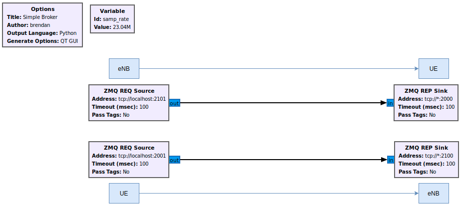
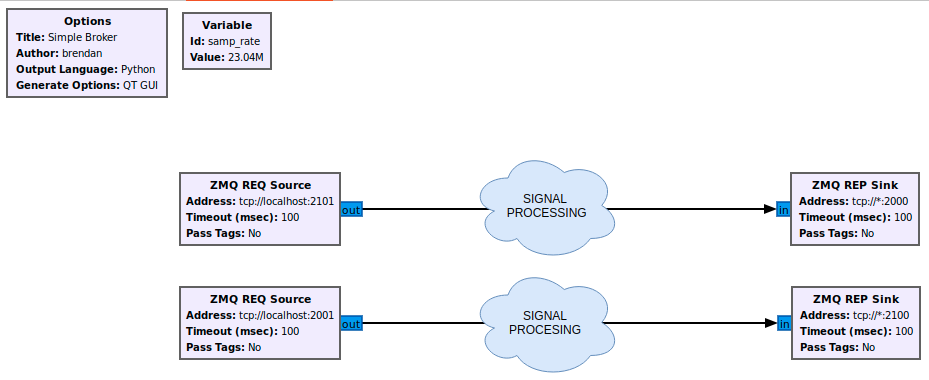

带有 ZMQ 虚拟无线电的 srsRAN 4G
简介
srsRAN 4G 是 4G 和 5G 软件无线电套件。 4G 网络由核心网络、eNodeB 和 UE 实现组成。通常为 eNodeB 和 UE 与物理无线电一起用于无线传输。然而，srsRAN 4G 软件套件还包括一个虚拟无线电，它使用 ZeroMQ 网络库在应用程序之间传输无线电样本。这种方法对于开发、测试、调试、CI/CD 或教学和演示非常有用。
本应用笔记展示了如何使用 srsRAN 4G 虚拟无线电方法创建端到端网络。
ZeroMQ安装
首先是安装 ZeroMQ 并构建 srsRAN 4G。在Ubuntu上，可以安装ZeroMQ开发库 与：
sudo apt-get install libzmq3-dev
或者，也可以从源安装。
首先，需要安装 libzmq：
git clone https://github.com/zeromq/libzmq.git
cd libzmq
./autogen.sh
./configure
make
sudo make install
sudo ldconfig
二、安装czmq：
git clone https://github.com/zeromq/czmq.git
cd czmq
./autogen.sh
./configure
make
sudo make install
sudo ldconfig
最后，您需要编译srsRAN 4G（假设您已经安装了所有必需的依赖项）。 请注意，如果您在安装 ZMQ 和其他依赖项之前已经构建并安装了 srsRAN 4G，那么您 必须重新运行 make 命令以确保 srsRAN 4G 识别 ZMQ 的添加：
git clone https://github.com/srsRAN/srsRAN_4G.git
cd srsRAN_4G
mkdir build
cd build
cmake ../
make
请请特别留意 cmake 的控制台输出，确认其中出现如下内容：
...
-- FINDING ZEROMQ.
-- Checking for module 'ZeroMQ'
-- No package 'ZeroMQ' found
-- Found libZEROMQ: /usr/local/include, /usr/local/lib/libzmq.so
...
在单台计算机上运行完整的端到端 LTE 网络
在单台机器上启动 LTE 网络组件之前，我们需要确保 UE 和 EPC 位于不同的网络命名空间中。 这是因为 EPC 和 UE 将共享相同的网络配置， 即路由表等。因为 UE 接收 IP 地址 从 EPC 的子网中，Linux 内核将绕过 TUN 接口 在两端之间路由流量。因此，我们创建一个单独的 UE 用于在其中创建其 TUN 接口的网络命名空间 (netns)。
我们只需要 UE 和 EPC 的 TUN 接口，因为它们是唯一的 IP 网络中的端点需要通过 TCP/IP 堆栈进行通信。
我们将在单独的终端实例中运行每个 srsRAN 4G 应用程序。 用于生成流量的 ping 和 iperf 等应用程序将在单独的终端中运行。
请注意，此处使用的示例可以在以下目录中找到： `./srsRAN_4G/build/`。
使用 UE、eNB 和 EPC，然后从其关联的目录中进行调用。
网络命名空间创建
让我们开始为（第一个）UE 创建一个名为“ue1”的新网络命名空间：
sudo ip netns add ue1
要验证新的“ue1”网络是否存在，请运行：
sudo ip netns list
运行 EPC
现在让我们启动EPC。这将在默认情况下创建一个 TUN 设备 网络命名空间，因此需要 root 权限。
sudo ./srsepc/src/srsepc
运行 eNodeB
现在让我们启动 eNodeB。我们在本例中使用默认配置并通过 需要通过命令行参数为 ZMQ 调整的所有参数。如果你 想让它们持久化，只需将它们添加到本地 enb.conf 中即可。 eNB 可以是 无需 root 权限即可启动。
./srsenb/src/srsenb --rf.device_name=zmq --rf.device_args="fail_on_disconnect=true,tx_port=tcp://*:2000,rx_port=tcp://localhost:2001,id=enb,base_srate=23.04e6"
运行 UE
最后我们可以启动 UE，再次使用 root 权限来创建 TUN 设备。
sudo ./srsue/src/srsue --rf.device_name=zmq --rf.device_args="tx_port=tcp://*:2001,rx_port=tcp://localhost:2000,id=ue,base_srate=23.04e6" --gw.netns=ue1
最后一个命令应启动 UE 并将其连接到核心网络。 UE 将被分配一个配置范围内的 IP 地址（例如 172.16.0.2）。
流量生成
要在下行链路方向（即来自 EPC）交换流量，只需运行 ping 或像往常一样在命令行上使用 iperf，例如：
ping 172.16.0.2
为了生成上行链路方向的流量，运行 ping 命令非常重要 在 UE 的网络命名空间中。
sudo ip netns exec ue1 ping 172.16.0.1
命名空间删除
完成后，请务必再次取下网。
sudo ip netns delete ue1
GNU-Radio 配套集成
GNU-Radio Companion 可以轻松地与基于 ZMQ 的 srsRAN 4G 实例集成。这可用于操纵和/或可视化在 UE 和 eNB 之间发送的基带 I/Q 数据。 它通过使用 GRC 内的 ZMQ 兼容块来实现此目的，该块连接到用于在两个网络元素之间传输数据的 TCP 端口。数据从 UE 传输到 eNB， 从 eNB 到 UE 可以通过 GRC Broker 进行处理。
下图展示了一个基本的GRC Broker：

上图显示了代理如何充当 UE 和 eNB 之间的中间人。蓝色框和箭头显示网络元素之间的数据方向。 本示例中使用了以下端口：
港口方向 |
srsUE |
srsENB |
|---|---|---|
TX |
2001 |
2101 |
接收 |
2000 |
2100 |
在此简单示例的基础上，可以根据需要对元素之间发送的 I/Q 数据进行处理、操作和/或可视化。这将导致 GRC 架构类似于 如下图所示。

这里元素之间的信号处理云代表数据处理发生的位置。
当在元素之间运行带有代理的 E2E 网络时，在启动网络时必须采取以下步骤：
启动EPC
使用ZMQ启动eNB
使用ZMQ启动UE
运行与代理关联的 GRC Flowgraph。
请注意，在代理启动之前，UE 不会连接到 eNB，因为 UL 和 DL 通道在 UE 和 eNB 之间不直接连接。您还需要重新启动 GRC 每次网络重新启动时代理。
已知问题
为了彻底拆卸，需要首先终止 UE，然后终止 eNB。
eNB和UE只能运行一次，UE分离后，需要重新启动eNB。
我们目前仅支持单个 eNB 和单个 UE。